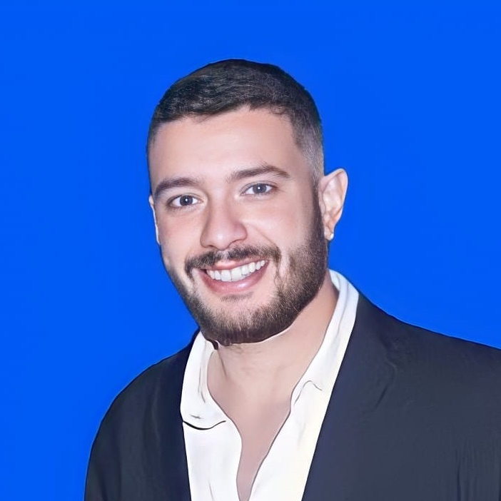

Olá,
Olá,
me chamo Pedro Rezende
Desenvolvedor FullStack JavaScript
Sobre mim:
Apaixonado por tecnologia e inovação. Buscando sempre conhecimento para me capacitar a realizar novos desafios pessoais e profissionais. Atualmente estou realizando uma transição de carreira, buscando uma oportunidade na área de tecnologia como pessoa desenvolvedora júnior. Dedico a maior parte do meu tempo aprimorando meu conhecimento. Atualmente estou em processo de formação na instituição Blue EdTech, cursando "Desenvolvimento Full-Stack". Recebi a oportunidade de trabalhar e estudar na escola de Tecnologia em que estudo, faço parte do time Educacional da Instituição.